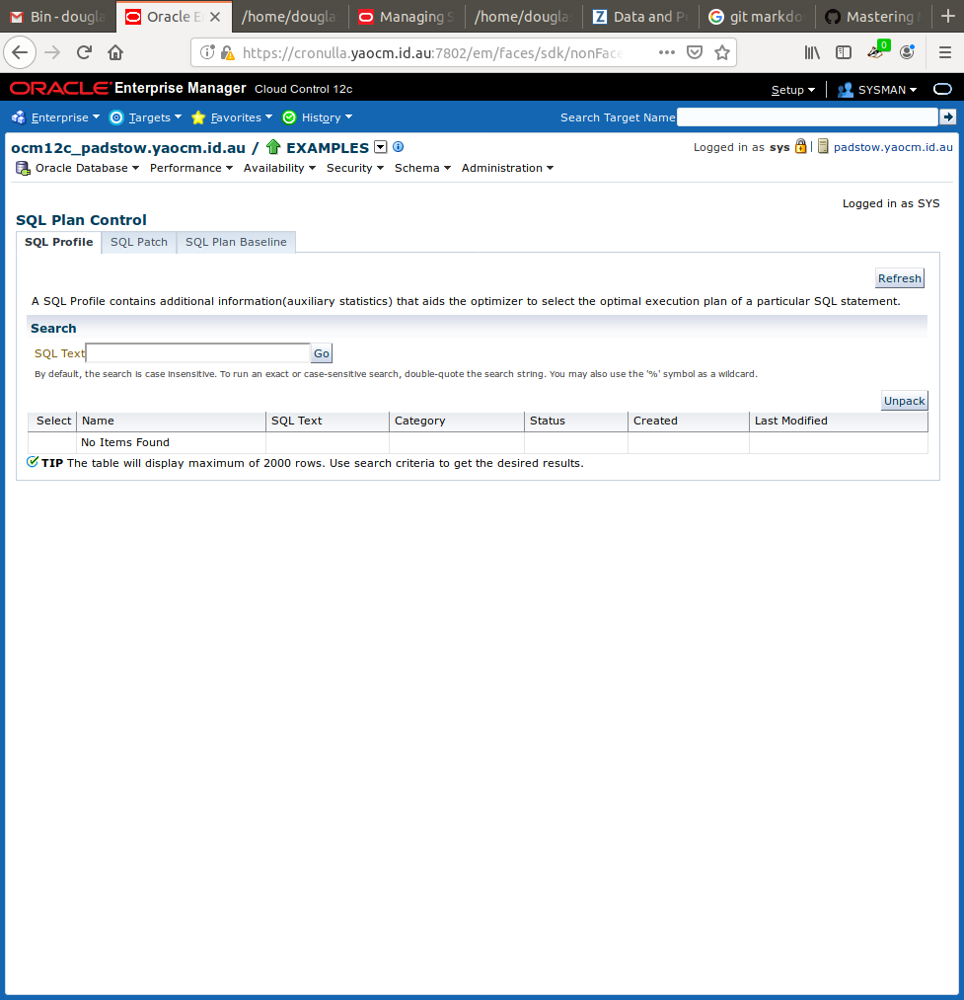
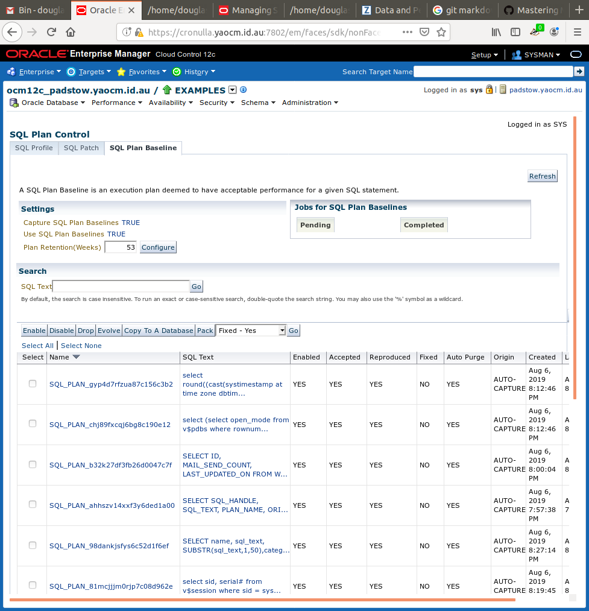
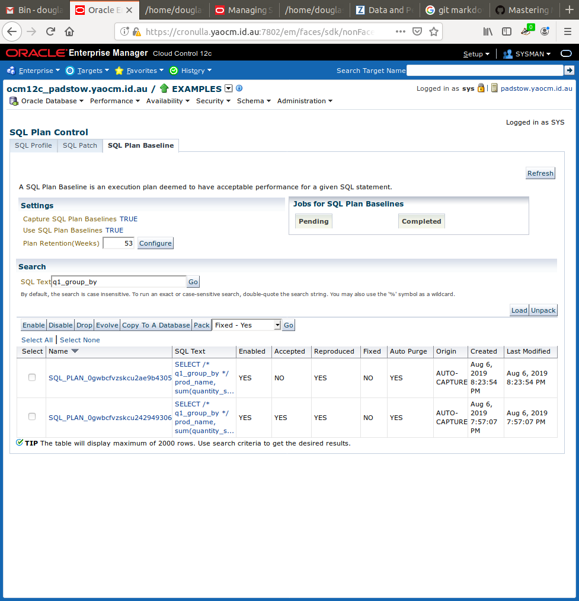
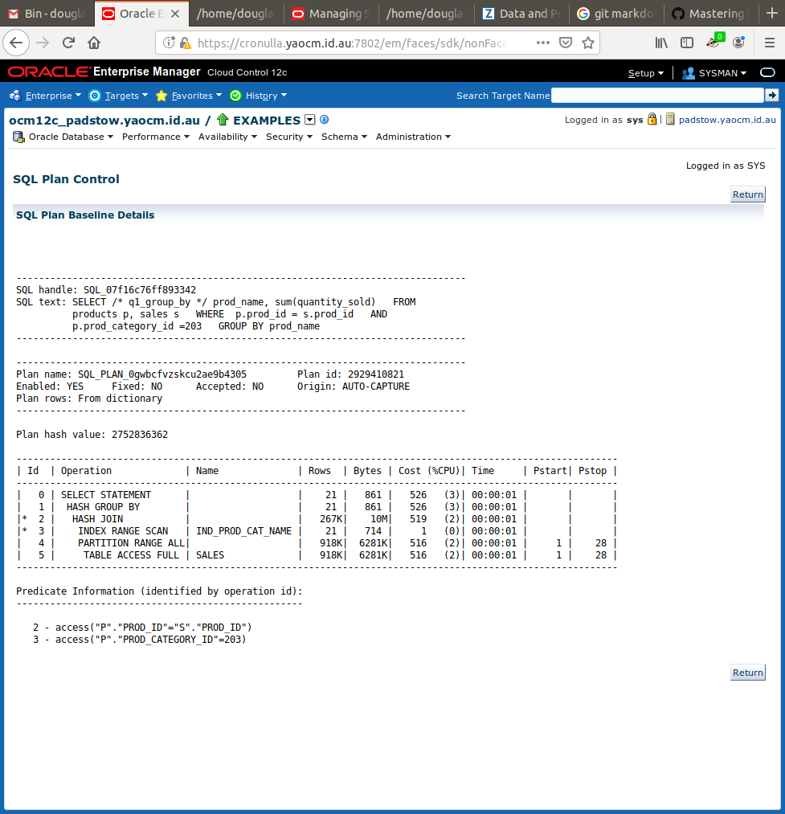

SummarySQL Plan Baselines can be:
Each of these options can be done through OEM or SQL*Plus References
Sample Session Using SQL*PlusThis sample session is based on the tutorial described in “ Managing an Evolve Task ”. The scripts used can be found at sql-ocm12c/Data and performance management/Create SQL Plan Baselines/ GIT repository. Determine Current Parameter SettingsUsed the following SQL*Plus command to show the relevant parameter settings for SQL Plan Baselines: show parameter sql_plan_baselines The result was: NAME TYPE VALUE ------------------------------------ ----------- ------------------------------ optimizer_capture_sql_plan_baselines boolean FALSE optimizer_use_sql_plan_baselines boolean TRUE Capture All SQL Plan BaselinesUsed the following SQL*Plus command to capture all SQL Plan Baselines: alter system set optimizer_capture_sql_plan_baselines=true Generate Some Test PlansUsed the following SQL*Plus command to run SQL in the SH schema of the EXAMPLES PDB: alter session set container=examples; alter session set current_schema=sh; Used the following SQL as the sample: SELECT /* q1_group_by */ prod_name, sum(quantity_sold) FROM products p, sales s WHERE p.prod_id = s.prod_id AND p.prod_category_id =203 GROUP BY prod_name; Check To See If Any SQL Plans Were CapturedUsed the following SQL to confirm that no SQL plans were captured after just one (1) execution of the above sample SQL: SELECT SQL_HANDLE, SQL_TEXT, PLAN_NAME, ORIGIN, ENABLED,
ACCEPTED, FIXED, AUTOPURGE
FROM DBA_SQL_PLAN_BASELINES
WHERE SQL_TEXT LIKE '%q1_group%';
The expected result is: no rows selected After Second Sample SQL ExecutionAfter the second execution of the sample SQLDetermine Current Parameter Settings Used the following SQL*Plus commands to discover that the SQL plan was captured after the second execution of the above sample SQL: SET PAGES 10000 LINES 140
SET SERVEROUTPUT ON
COL SQL_TEXT FORMAT A20
COL SQL_HANDLE FORMAT A20
COL PLAN_NAME FORMAT A30
COL ORIGIN FORMAT A12
SET LONGC 60535
SET LONG 60535
SET ECHO ON
SELECT SQL_HANDLE, SQL_TEXT, PLAN_NAME, ORIGIN, ENABLED,
ACCEPTED, FIXED, AUTOPURGE
FROM DBA_SQL_PLAN_BASELINES
WHERE SQL_TEXT LIKE '%q1_group%';
The result is: SQL_HANDLE SQL_TEXT PLAN_NAME ORIGIN ENA ACC FIX
-------------------- -------------------- ------------------------------ ------------ --- --- ---
SQL_07f16c76ff893342 SELECT /* q1_group_b SQL_PLAN_0gwbcfvzskcu242949306 AUTO-CAPTURE YES YES NO
y */ prod_name, sum(
quantity_sold)
FROM products p,
sales s
WHERE p.prod_id =
s.prod_id
AND p.prod_cate
gory_id =203
GROUP BY prod_name
Create Index to Improve SQL PlanCREATE INDEX ind_prod_cat_name ON products(prod_category_id, prod_name, prod_id);SQL Plan Control page CREATE INDEX ind_sales_prod_qty_sold ON sales(prod_id, quantity_sold); The SQL Plans now include the following entries for the sample query: SQL_HANDLE SQL_TEXT PLAN_NAME ORIGIN ENA ACC FIX
-------------------- -------------------- ------------------------------ ------------ --- --- ---
SQL_07f16c76ff893342 SELECT /* q1_group_b SQL_PLAN_0gwbcfvzskcu242949306 AUTO-CAPTURE YES YES NO
y */ prod_name, sum(
quantity_sold)
FROM products p,
sales s
WHERE p.prod_id =
s.prod_id
AND p.prod_cate
gory_id =203
GROUP BY prod_name
SQL_07f16c76ff893342 SELECT /* q1_group_b SQL_PLAN_0gwbcfvzskcu2ae9b4305 AUTO-CAPTURE YES NO NO
y */ prod_name, sum(
quantity_sold)
FROM products p,
sales s
WHERE p.prod_id =
s.prod_id
AND p.prod_cate
gory_id =203
GROUP BY prod_name
SQL_a8431fd849deb87e SELECT SQL_HANDLE, S SQL_PLAN_ahhszv14xxf3y6ded1a00 AUTO-CAPTURE YES YES NO
QL_TEXT, PLAN_NAME,
ORIGIN, ENABL
ED, ACCEPTED, FIXED
FROM DBA_SQL_PLAN_
BASELINES
WHERE SQL_TEXT LIKE
'%q1_group%'
There are now two (2) SQL Plan Baselines for the sample query, and one (1) for the retrieval of the SQL Plan baselines. Using OEMAccess SQL Plan ControlAccess the SQL Plan Baselines by following the following pull-down menus on the database home page:
You will be taken to the SQL Plan Control page. Access SQL Plan Baseline TabOn the SQL Plan Control page, click on the SQL Plan Baseline tab: Captured SQL Plan BaselinesYou will note that the first two (2) settings correspond to the initialisation parameters that were examined about in Determine Current Parameter Settings . Since optimizer_capture_sql_plan_baselines is enabled, you will note that all of the plans displayed have an origin of AUTO-CAPTURE . Finding Sample SQL Plan BaselinesIn the SQL Text box under Search , I entered q1_group_by to locate all SQL Plan Baselines for the sample SQL I executed above. The result is: Details of SQL Plan BaselineClicking on the first SQL Plan Baseline on the current page yields the following details of the SQL Plan Baseline. Using SQL Tuning Sets to Create SQL Plan BaselinesI have created a shell script, called load_smb_from_sts.sh , which runs a simple scenario to:
|